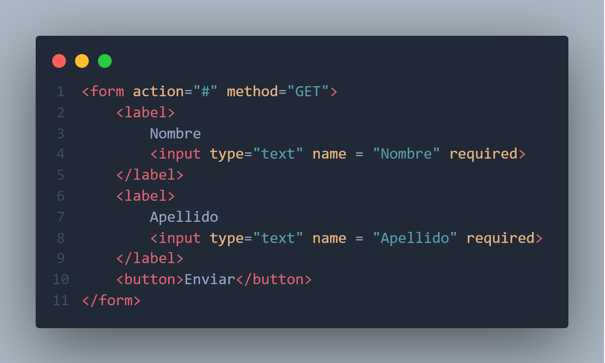
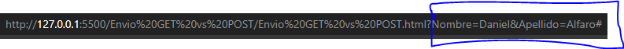
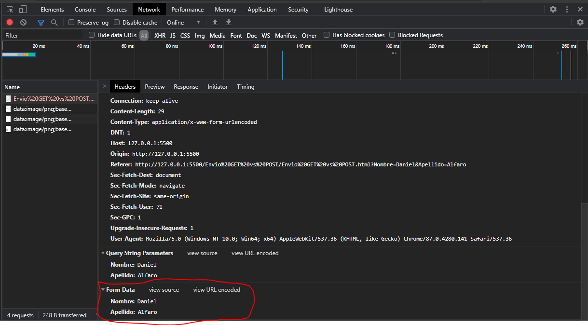

Estos dos atributos de la etiqueta <form> se utilizan para enviar la informacion que el usuario haya puesto en el formulario, por defecto si no llegasemos a indicar nada el envio se hara por el metodo GET.
<form action = "" method = "">
//contenido del formulario
</form>
Este metodo lo que va a realizar es enviar los datos atraves de la url, este metodo no es recomendable usarlo en formularios de contacto ni en un login ya que los datos ingresados por el usuario se guardarian en el historial del navegador.

A continuacion veremos un ejemplo en el cual al llenar el formulario y enviarlos los datos se veran reflejados en la URL, cada dato maneja un nombre y un valor, cada dato del formulario va separado por ampersand como lo podemos ver en la imagen.

Usando este metodo los datos se enviaran por detras de la pagina, este tipo de envio es bueno usarlo en un formulario de contacto o en un login.
Para poder ver que datos se enviaron, desde el inspector de elementos podremos ver el nombre del campo y el valor de los datos que se enviaron.
